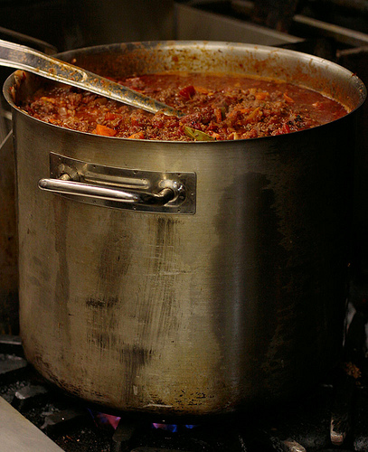

13 Bean Chili

Description
There's nothing more simple and satisfying than a hot bowl of chili on a cold night. If you're like me, you've got a pantry stocked well enough to whip up a batch of this AMAZING chili at a moments notice.
Ingredients
- 1 can black beans
- 1 can black-eyed peas
- 1 can butter beans
- 1 can garbanzo beans
- 1 can kidney beans
- 1 can lentils
- 1 can lima beans
- 1 can mung beans
- 1 can navy beans
- 1 can pink beans
- 1 can pinto beans
- 1 can red beans
- 1 can white beans
- 12 jalapeno peppers
- 6 large onions
- 6 large cans of whole tomatoes
- 6 lbs coarse ground wagyu beef
- 6 red bell peppers
- your favorite chili seasoning
Steps
- In the largest pot you own, brown the beef on med heat
- Coarsely dice the onion, jalapeno, and red pepper and throw it in
- Add the tomatoes
- Add the beans
- Reduce heat to a simmer
- Season to taste
Voila!